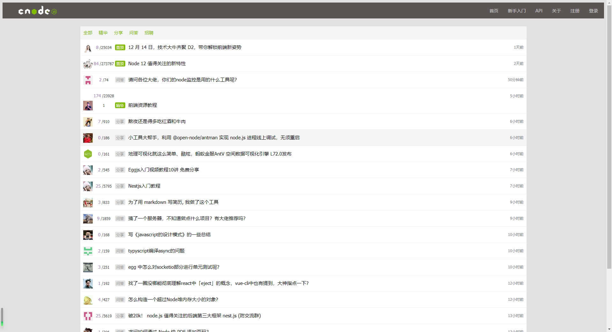

项目经历
React 番茄todolist

- 项目介绍：使用 React 开发番茄钟及todolist单文件应用,使用redux管理状态,实现登录、注册、番茄闹钟、TodoList等功能
- 技术栈：react/create-react-app/ant-design/typescript/es6/redux/react-router/axios
- 项目源码: https://github.com/HuangJM7/react-todolist
- 预览链接: https://huangjm7.github.io/react-todolist/build/
Vue Cnode社区

- 项目介绍：该项目使用 Vue 还原 CNode 官方社区，调用 CNode 官方社区提供的 API，以Vue CLI创建项目模版， 使用 Axios获取数据，使用Vue Router进行前端路由的切换及传参，使用 watch 监听路由的变化，Webpack 打包。
- 技术栈：Vue CLI/ Vue2/ Vue Router/ Axios/ ES6/ yarn/webpack/移动端适配
- 项目源码: https://github.com/HuangJM7/vue-cnode
- 预览链接: https://huangjm7.github.io/vue-cnode/dist/index.html
Vue 井字棋
- 项目介绍： 使用 Vue开发的井字棋小游戏,通过组件管理对象数据,通过v-on,v-bind传递props及events实现下棋功能,通过vm.$children批量处理子组件实现重置功能
- 项目源码: https://github.com/HuangJM7/VueTicTacToe
- 预览链接: https://huangjm7.github.io/VueTicTacToe/dist/index.html
Canvas在线画板
- 项目介绍： 使用 纯原生 JS开发的，主要利用 HTML 5 的Canvas API ，是我在学习原生 JS 及 Canvas 过程中开发的小工具。 提供在PC 及手机端 在线画画、橡皮擦、清空、画笔调色、笔记粗细、画作下载等功能。
- 项目源码: https://github.com/HuangJM7/jirengu-learning/tree/master/20进阶完成画板
- 预览链接: https://huangjm7.github.io/jirengu-learning/20进阶完成画板/canvas.html